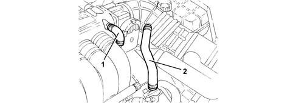
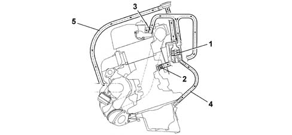
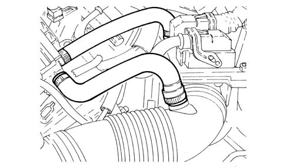

1080D CRANKCASE VAPOUR/GAS RECIRCULATION SYSTEM
- Path
- Descriptions > 10 ENGINE UNIT > 1080 EXHAUST EMISSION CONTROL SYSTEM > 1080D CRANKCASE VAPOUR/GAS RECIRCULATION SYSTEM
- Kind
- system description
- Applies to
- all engines; all production periods
- Interactive page
- https://sloeber94.github.io/elrnDB-aGt/en/#/125000302
Applies to: engines: 3.2 V6; all production periods
Operation
During engine operation, oil vapours from the crankcase collect in the cylinder heads.
A portion of the oil vapours condense and fall into the crankcase. The remaining vapours are directed to the intake via pipes (1) and (2).
When idling, oil vapours flow through pipe (1). At higher loads, they flow through pipe (2).

Applies to: engines: 1.9 JTD 16V; all production periods
SPECIFICATIONS
Function
The oil vapour emissions are controlled by means of an oil separator (1) which collects the vapours coming from the crankcase (2) and from the tappet cover (3). The condensed vapours return to the sump, via a pipe, whilst the uncondensed vapours are sent, via a pipe (5) to the turbocharger air inlet hose.

1 - Oil separator
2 - Oil vapour outlet from the crankcase
3 - Oil vapour outlet from the tappet cover
4 - Condensed vapour sump return
5 - Inlet vapour delivery pipe
6 - Regulation valve
There is a regulation valve (6), on the inlet vapour delivery pipe (5), with a spring that in normal conditions acts on a diaphragm keeping it open, thereby allowing the flow of oil vapours coming from the oil separator.
When the vacuum inside the pipe (5) overcomes the calibration of spring, the diaphragm moves thereby closing the duct from the oil vapour separator preventing the intake of oil from the sump.
Applies to: engines: 1.8 T.SPARK; all production periods
Operation
During engine operation the oil vapours coming from the oil sump and the crankcase are collected in the tappet cover which carries out a separator/condenser function. A duct in the crankcase improves the collection of the vapours.
A portion of the oil vapours condense and fall into the crankcase. The remaining vapours are directed to the intake via pipes (1) and (2).
When idling, oil vapours flow through pipe (1). At higher loads, they flow through pipe (2).
